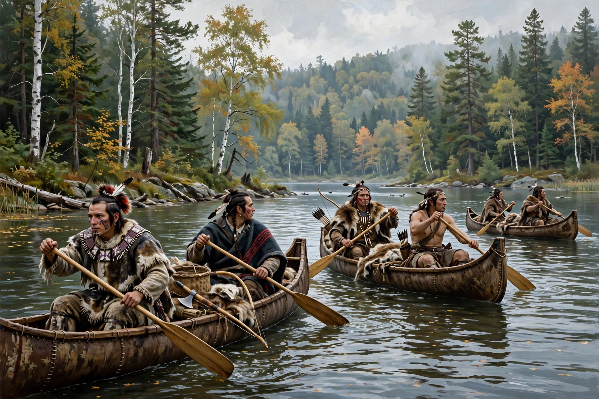

Beaver Wars

The Beaver Wars, also known as the Iroquois Wars or the French and Iroquois Wars, were a series of conflicts fought intermittently during the 17th century in eastern North America. The Iroquois Confederacy (Haudenosaunee), armed by their Dutch and later English trading partners, sought to dominate the fur trade and expand their hunting territories at the expense of neighbouring Algonquian and Iroquoian peoples allied with New France.
| Date | c. 1609–1701 |
|---|---|
| Location | Great Lakes region, St. Lawrence and Ohio valleys |
| Result | Great Peace of Montreal (1701) |
| Belligerents | Iroquois Confederacy with Dutch/English support — Huron, Erie, Neutral, Susquehannock, Algonquin and other nations with French support |
Causes
By the 1640s the Iroquois had trapped out the beaver in their own country and depended on trade with the Dutch at Fort Orange for pelts to exchange for firearms and goods. Raiding and warfare to control hunting grounds — and "mourning wars" to capture people to replace populations lost to European diseases — escalated into campaigns of dispersal and conquest.
Course
Between 1648 and 1657 the Iroquois destroyed or dispersed the Huron, Petun, Neutral and Erie confederacies, and later subdued the Susquehannock. French military intervention under the Carignan-Salières Regiment in the 1660s brought a temporary peace, but war resumed in the 1680s, including the Lachine massacre of 1689 and French invasions of Seneca and Onondaga country. By the 1690s both sides were exhausted, the Iroquois badly weakened by disease, war losses and English unreliability.
Outcome
The Great Peace of Montreal of 1701 settled the wars between the Iroquois, the French and some 39 indigenous nations. The Iroquois adopted a policy of neutrality between France and England, while their claims to the Ohio Country hunting grounds remained a source of friction into the French and Indian War.